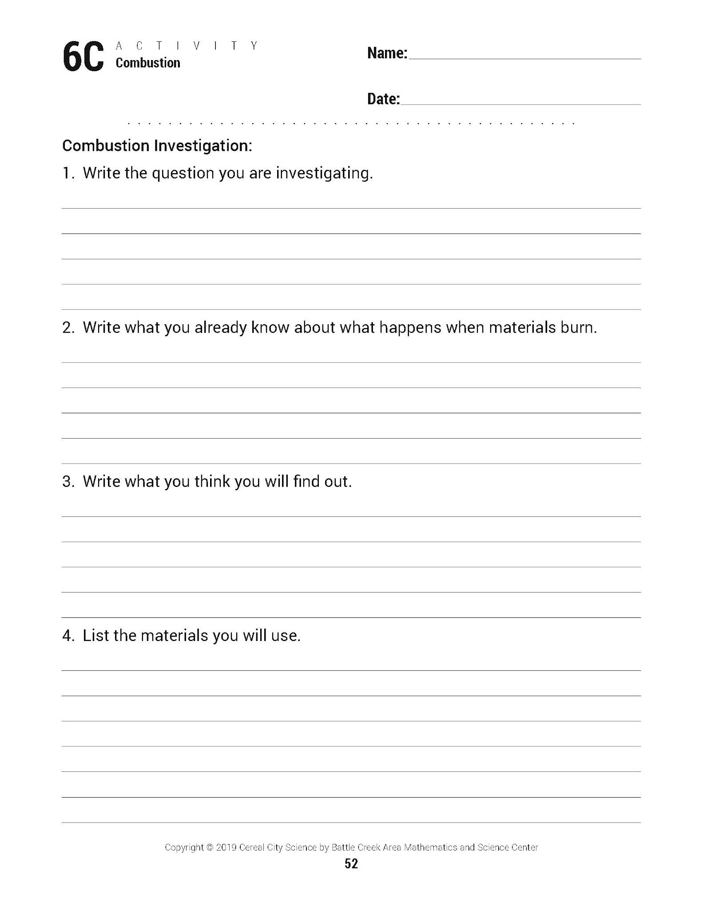
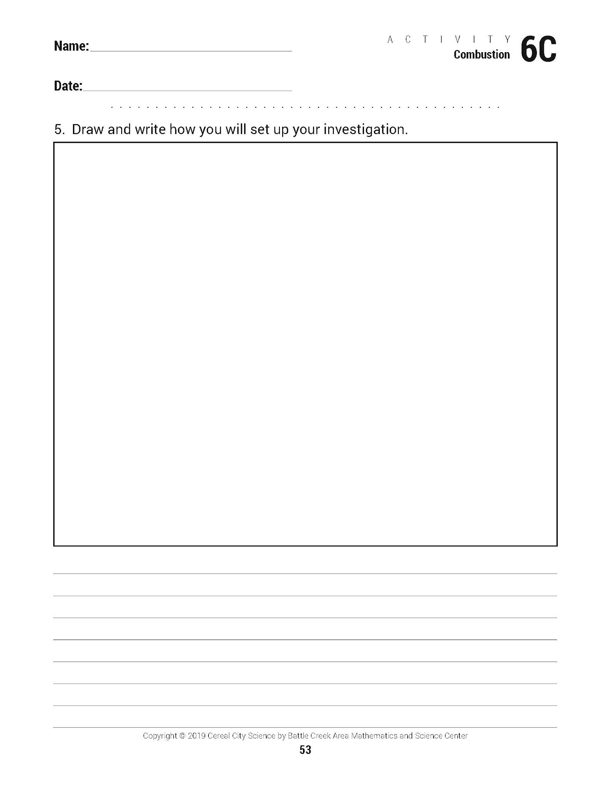
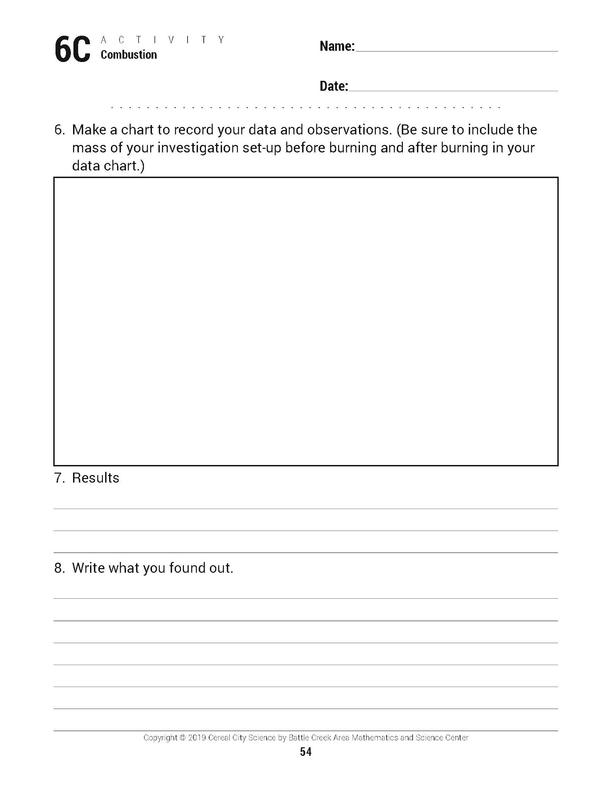
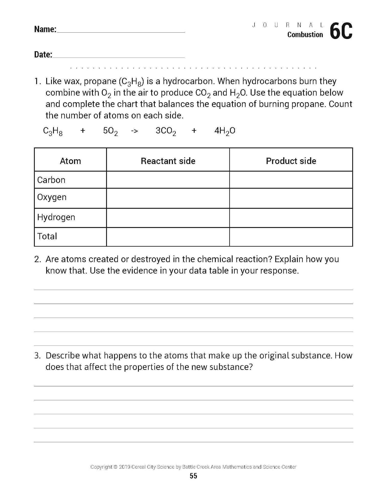

Combustion Investigation:
1. Write the question you are investigating.
2. Write what you already know about what happens when materials burn.
3. Write what you think you will find out.
4. List the materials you will use.
Student journal pages 52–55 • Select a page below to read its editable text.
1. Write the question you are investigating.
2. Write what you already know about what happens when materials burn.
3. Write what you think you will find out.
4. List the materials you will use.
This is the unmarked scanned page for checking original diagrams, exact wording, or layout. The editable HTML content is above.

5. Draw and write how you will set up your investigation.
This is the unmarked scanned page for checking original diagrams, exact wording, or layout. The editable HTML content is above.

6. Make a chart to record your data and observations. (Be sure to include the mass of your investigation set-up before burning and after burning in your data chart.)
7. Results
8. Write what you found out.
This is the unmarked scanned page for checking original diagrams, exact wording, or layout. The editable HTML content is above.

1. Like wax, propane (C₃H₈) is a hydrocarbon. When hydrocarbons burn they combine with O₂ in the air to produce CO₂ and H₂O. Use the equation below and complete the chart that balances the equation of burning propane. Count the number of atoms on each side.
C₃H₈ + 5O₂ → 3CO₂ + 4H₂O
| Atom | Reactant side | Product side |
|---|---|---|
| Carbon | ||
| Oxygen | ||
| Hydrogen | ||
| Total |
2. Are atoms created or destroyed in the chemical reaction? Explain how you know that. Use the evidence in your data table in your response.
3. Describe what happens to the atoms that make up the original substance. How does that affect the properties of the new substance?
This is the unmarked scanned page for checking original diagrams, exact wording, or layout. The editable HTML content is above.
